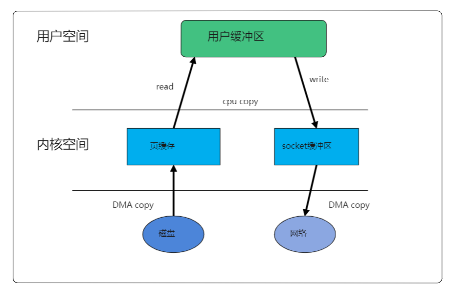
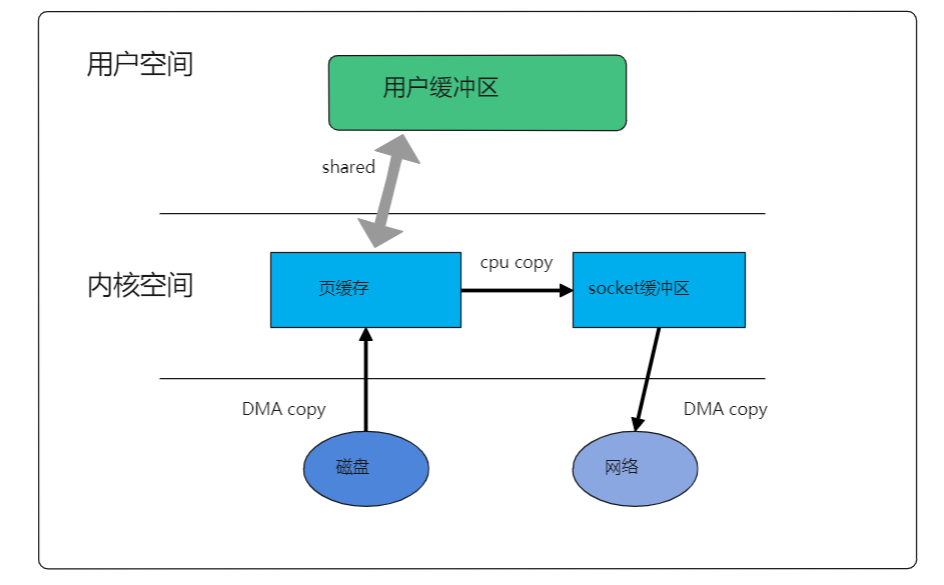

前言
传统的 Linux 操作系统的标准 I/O 接口是基于数据拷贝操作的，即 I/O 操作会导致数据在操作系统内核地址空间的缓冲区和应用程序地址空间定义的缓冲区之间进行传输。这样做最大的好处是可以减少磁盘 I/O 的操作，因为如果所请求的数据已经存放在操作系统的高速缓冲存储器中，那么就不需要再进行实际的物理磁盘 I/O 操作。
但是数据传输过程中的数据拷贝操作却导致了极大的 CPU 开销，限制了操作系统有效进行数据传输操作的能力。
什么是零拷贝
CPU 不需要先将数据从一个内存区域复制到另一个内存区域，从而可以减少上下文切换以及 CPU 的拷贝时间。
为什么用零拷贝
- 零拷贝技术可以减少数据拷贝和共享总线操作的次数，消除传输数据在存储器之间不必要的中间拷贝次数，从而有效地提高数据传输效率。
- 零拷贝技术减少了用户应用程序地址空间和操作系统内核地址空间之间因为上下文切换而带来的开销。
- 进行大量的数据拷贝操作其实是一件简单的任务，从操作系统的角度来说，如果 CPU 一直被占用着去执行这项简单的任务，那么这很浪费资源的；如果有其他比较简单的系统部件可以代劳这件事情，使得 CPU 解脱出来可以做别的事情，那么系统资源的利用会更加有效。
零拷贝技术目标
- 避免操作系统内核缓冲区之间进行数据拷贝操作。
- 避免操作系统内核和用户应用程序地址空间这两者之间进行数据拷贝操作。
- 用户应用程序可以避开操作系统直接访问硬件存储。
- 数据传输尽量让 DMA 来做。
- 避免不必要的系统调用和上下文切换。
- 需要拷贝的数据可以先被缓存起来。
- 对数据进行处理尽量让硬件来做。
将一个磁盘文件不做修改的通过socket发送出去

从图中可以看出, 一共进行了4次拷贝, 其中cpu进行了两次拷贝, 而且在内核态和用户态之间还会进行多次的上下文切换.
这无疑增加了不少cpu负担, 这时用零拷贝技术, 可以有效提升效率并能提升cpu效率
怎么做到零拷贝
存储映射I/O
存储映射I/O(memory-mapped I/O)能将一个磁盘文件映射到存储空间中的一个缓存区上, 于是, 当从缓冲区中取数据时, 就相当于读文件中的相应的字节.
这时上面的磁盘文件发送到socket就变成了如下情况

用户空间的缓存与内核空间的缓存有个映射关系, 相当于用户共享了内核空间的内存, 用户空间往socket缓冲区拷贝数据, 就相当于从一个内核区域拷贝到另一个内核区域, 减少了cpu拷贝次数.
mmap的缺点
- 当引用尚不存在的内存页时, 这样的复制过程就会作为处理页错误的结果而出现, 当这种页错误频繁出现时, 会大大影响效率.
- 该映射是需要页对齐的, 对小数据来映射, 会产生内存浪费和内存碎片
其它的零拷贝技术, 同样是以减少内核空间与用户空间之间的多余拷贝过程而达到零拷贝目标的, 只是有不同的应用场景和实现方式.
其它零拷贝方法
- sendfile
数据可以直接在内核空间内部进行I/O传输, sendfile调用中I/O数据对用户空间是完全不可见的. - splice
splice系统调用可以在内核空间的读缓冲区和网络缓冲区之间建立管道, 从而避免两者之间的CPU拷贝操作
最后要知道, 零拷贝不是没有拷贝, 而是减少没必要的拷贝